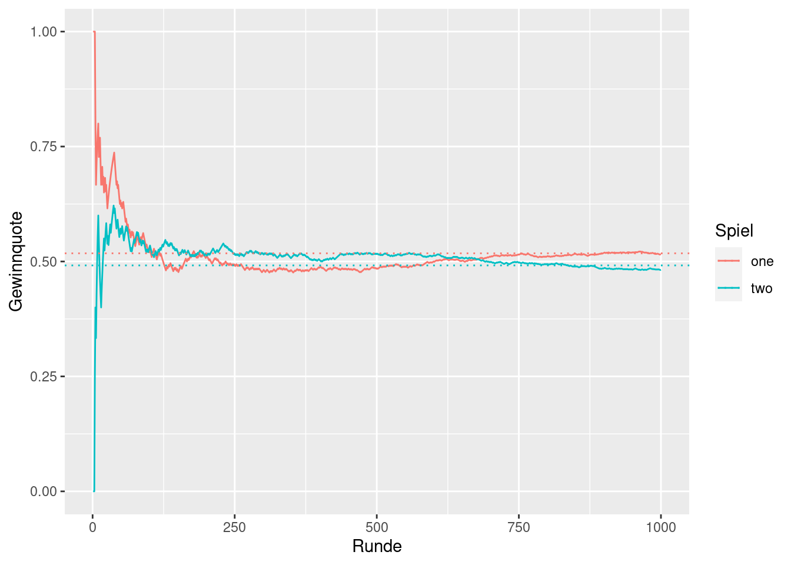
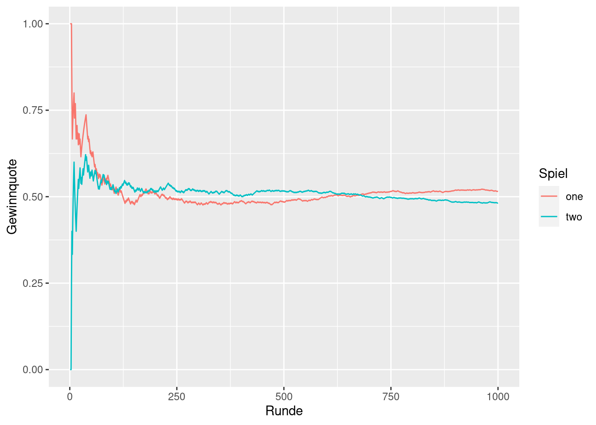

simulate_dice <- function(k, game) {
if (game == 1) {
# k Zufallszahlen aus Intervall [0, 6] simulieren
x <- runif(k, min = 0, max = 6)
# Auf ganze Zahl aufrunden.
return(ceiling(x))
} else if (game == 2) {
# 2 * k Zufallszahlen aus Intervall [0, 6] simulieren
x <- runif(2 * k, min = 0, max = 6)
# Auf ganze Zahl aufrunden und tibble befüllen
# Jede Zeile ist ein Wurf von zwei Würfeln
x <- ceiling(x)
tib <- tibble::tibble(
"W1" = x[1:k],
"W2" = x[(k+1):(2 * k)]
)
return(tib)
} else {
stop('Ich kenne nur Spiel 1 oder 2')
}
}Übungsblatt 2
Ziel
Betrachte zwei Spiele.
Ein Würfel wird maximal \(n\) mal geworfen. Wir gewinnen das Spiel, wenn wir eine 6 würfeln.
Zwei Würfel werden gleichzeitig maximal \(m\) mal geworfen. Wir gewinnen das Spiel, wenn wir einen 6er Pasch würfeln.
Wir wollen nun \(N\) Runden dieser beiden Spiele simulieren und zählen wie oft wir jedes Spiel gewinnen. Theoretisch sollte sich die relative Anzahl der gewonnen Spiele für große \(N\) den echten Gewinnwahrscheinlichkeiten annähern (jeweils für Spiel 1 und 2).
Hilfsfunktion
Ihr könnt die folgende Hilfsfunktion verwenden. Den Code darin musst du nicht verstehen.
Die Hilfsfunktion übernimmt für uns das Würfeln. Das erste Argument k bestimmt, wie oft wir spielen und das zweite Argument game bestimmt, ob wir Spiel 1 oder 2 spielen. Entsprechend sind auch die Ausgaben unterschiedlich.
Für game = 1 wird ein Vektor mit Zahlen zwischen 1 und 6 zurückgegeben. Für game = 2 wird ein tibble (eine Tabelle) mit Zahlen zwischen 1 und 6 zurückgegeben. Dabei steht die erste Spalte W1 für die Zahl des ersten Würfels und W2 entsprechend für den zweiten Würfel. Für andere Werte von game erhalten wir eine Fehlermeldung.
library(tidyverse)
simulate_dice(10, game = 1) [1] 3 4 1 2 5 3 2 4 6 4simulate_dice(10, game = 2)# A tibble: 10 × 2
W1 W2
<dbl> <dbl>
1 4 1
2 6 6
3 6 1
4 6 4
5 1 3
6 4 6
7 4 2
8 2 2
9 1 3
10 3 3simulate_dice(10, game = 3)Error in simulate_dice(10, game = 3): Ich kenne nur Spiel 1 oder 2Gewinne in Spiel 1
Wir wollen zunächst mal nur Spiel 1 untersuchen. Schreibe eine Funktion game_one(n), die Spiel 1 einmal spielt und uns sagt, ob wir gewonnen haben (Rückgabe gewonnen: TRUE, Rückgabe verloren: FALSE). Offensichtlich ist diese Funktion von der Variable \(n\) abhängig.
Hinweise:
Vergiss nicht, dass du die
simulate_dice()Funktion nutzen kannst, um entsprechend oft zu würfeln.In R wird
TRUEals 1 interpretiert undFALSEals 0. Dies könntest du beispielsweise nutzen, um einen Booleanvektor zu summieren. Wenn die Summe größer als Null ist, dann war offensichtlich einTRUEin dem Vektor enthalten.
Der Output deiner Funktion könnte also so aussehen. Beachte, dass die Ausgabe zufällig ist. Wir simulieren hier ja zufällige Ereignisse.
game_one(n = 4)
## [1] FALSE
game_one(n = 4)
## [1] FALSE
game_one(n = 4)
## [1] TRUESimuliere nun das erste Spiel N mal. Wähle dabei N = 1000 und n = 4. Dazu kannst du dir einen leeren Boolenvektor game_one_wins der Länge N erstellen. Lasse diesen dann über eine for-Schleife befüllen.
N <- 1000
game_one_wins <- logical(length = N)
# Einzelne Einträge lassen sich mit [] und <- ändern
# Bspw. game_one_wins[1] <- TRUE setzt den ersten Eintrag auf TRUEDen relativen Anteil der gewonnen Spiele könntest du nun mit mean() berechnen.
mean(game_one_wins)[1] 0.515Gewinne in Spiel 2
Wir haben uns in dem vorangegangen Abschnitt einen Vektor game_one_wins erstellt, der uns für die N Spiele sagt, welches wir gewonnen oder verloren haben. Das gleiche sollst du nun für Spiel 2 machen. Diesen Vektor nennen wir game_two_wins.
Gehe dabei analog zum vorherigen Abschnitt vor. Konkret:
Erstelle eine Funktion
game_two(m), die in Abhängigkeit einer Zahlmzurückgibt, ob wir ein Spiel gewonnen haben. Hinweise:Die Funktion
simulate_dice()gibt dir ja in diesem Fall einen tibble zurück. Somit musst du überprüfen, ob in der zurückgegebenen Tabelle ein 6er-Pasch vorkommt. Dies kannst du durch geschicktes filtern herausfinden. Anschließend kannst du mit der Funktionnrow()herausfinden, wieviele Zeilen deine gefilterte Tabelle hat.# Kleines Beispiel wie die Funktion nrow() funktioniert. nrow(simulate_dice(4, game = 2))[1] 4
Befülle einen zunächst leeren Vektor mithilfe einer for-Schleife. Nutze dabei
N = 1000undm = 24.
Den relativen Anteil der gewonnen Spiele könntest du nun wieder mit mean() berechnen.
mean(game_two_wins)[1] 0.482Vergleich der Gewinnchancen
Wir wollen nun für die Parameter N = 1000, n = 4 und m = 24 die Gewinnchancen vergleichen. Dazu wollen wir die Entwicklung der relativen Anzahl der Gewinne von 1, …, N visualisieren und mit den echten Gewinnwahrscheinlichkeiten vergleichen. Am Ende des Tages soll das so aussehen.

Hier sehen wir also, dass sich die relative Gewinnanzahl mit zunehmender Spielanzahl an die theoretische Wahrscheinlichkeit annähert.
Um diese Grafik zu erstellen, wollen wir wie folgt vorgehen. Zunächst sammeln wir unseren bisherigen erstellten Vektoren in einem tibble.
win_data <- tibble(
N = 1:N,
game_one = game_one_wins,
game_two = game_two_wins
)
win_data# A tibble: 1,000 × 3
N game_one game_two
<int> <lgl> <lgl>
1 1 TRUE FALSE
2 2 TRUE FALSE
3 3 TRUE FALSE
4 4 TRUE TRUE
5 5 FALSE TRUE
6 6 FALSE FALSE
7 7 TRUE TRUE
8 8 TRUE TRUE
9 9 TRUE TRUE
10 10 TRUE TRUE
# … with 990 more rowsDann erstellen wir zwei Vektoren game_one_quota und qame_two_quota. Der i-te Eintrag dieser Vektoren enthält die relative Gewinnhäufigkeit bis zum i-ten Spiel (jeweils für Spiel 1 und 2). Um solche Vektoren zu erstellen, kannst du die numeric() funktion benutzen. Diese funktioniert genauso wie logical(). Jedoch erstellt sie einen leeren Zahlenvektor und keinen Booleanvektor.
Sobald ihr diese Vektoren berechnet habt, könnt ihr sie in einen tibble werfen und diesen umordnen. Das geht mit dem folgenden Code.
quota_data <- tibble(
N = 1:N,
game_one = game_one_quota,
game_two = game_two_quota
) |>
pivot_longer(
cols = -N,
names_to = 'game',
names_prefix = 'game_',
values_to = 'quota'
)
quota_data# A tibble: 2,000 × 3
N game quota
<int> <chr> <dbl>
1 1 one 1
2 1 two 0
3 2 one 1
4 2 two 0
5 3 one 1
6 3 two 0
7 4 one 1
8 4 two 0.25
9 5 one 0.8
10 5 two 0.4
# … with 1,990 more rowsMit diesem Datensatz können wir nun unser Liniendiagramm erstellen. Dies funktioniert genauso wie auf dem ersten Übungsblatt.

Die gepunkteten Linien kriegen wir nun eine geom_hline() zu dem Plot hinzu”addieren”. Schaue in die Dokumentation von geom_hline() welche Argumente es im mapping versteht (in ggplot sagt man auch oft “aesthetic” zu diesen Argumenten).

Zusammenfassung der Aufgaben
Die Aufgaben sind wieder im Text verstreut. Hier eine kleine Übersicht, damit du nichts vergisst.
game_one()Funktion erstellen (1)game_one_winsVektor befüllen (1)Das gleiche für Spiel 2 (1.5)
game_one_quotaundgame_two_quotaVektoren erstellen (1.5)Finale Grafik erstellen (1)